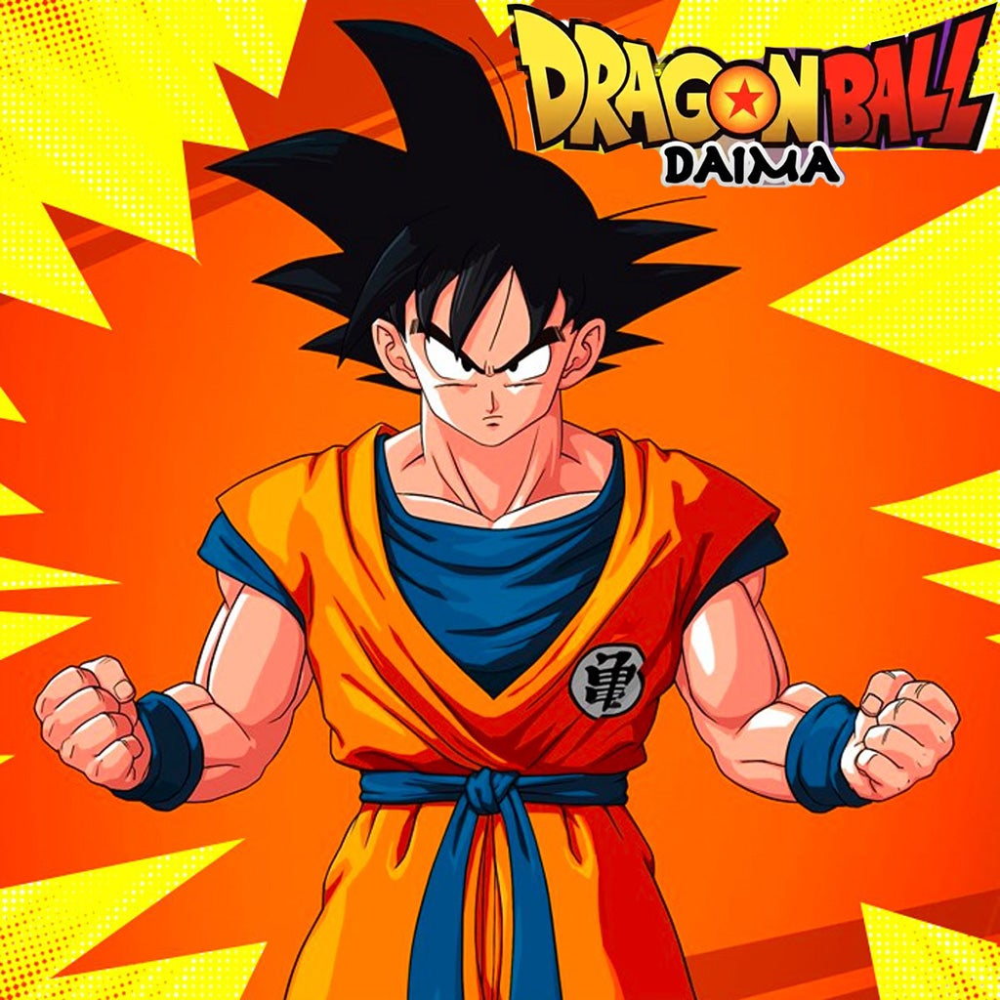

A seguir veremos 3 curiosidades sobre o universo Z!

curiosidade 1:
O cabelo de Vegeta nunca muda!
Na explicação do universo de Dragon Ball, o cabelo dos Saiyajins de sangue puro não cresce nem muda de formato. Por isso o Vegeta mantém aquele penteado desde criança.
curiosidade 2:
Goku quase teve outro nome!
Antes de Akira Toriyama definir o nome Son Goku, o personagem passou por ideias diferentes durante o desenvolvimento. O nome acabou sendo inspirado em Sun Wukong, personagem de Jornada ao Oeste.
curiosidade 3:
O Shenlong não é o único dragão das Esferas
Existem diferentes conjuntos de Esferas do Dragão na franquia, e cada conjunto está ligado a um dragão diferente. O Shenlong é o mais conhecido, mas existem outros, como Porunga, de Namekusei.